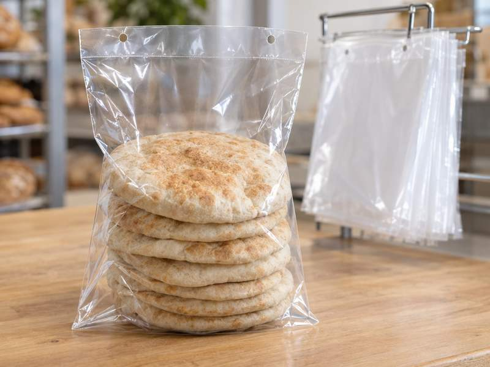

Pita & flatbread
Wicketed pita bags.
Clear or printed bags for pita and flatbread, stacked on wire wickets for quick bagging. Made to your size.

- 60+years making bags
- In houseprint, convert, zippers
- 3–4 wktypical lead time
- 8-colorflexo printing
Made for pita bakeries.
- Show the breadClear film lets fresh pita sell itself.
- Load fastWicketed stacks keep the packing table moving.
- Your name on itPrint up to 8 colors, or keep it plain.
Options
Build your pita bag.
Clear film
Or white and metallized. PE & PP.
Up to 8-color print
Flexo printing, or plain.
Gussets
Room for thick stacks.
Zippers
Resealable, added in house.
Lip & flap
Sized to your wicket.
Anti-Fog
Keeps the bread in view.
Made to spec
Sized to your pita.
Sizes, gauges and minimums: ask us. Everything is made to your spec.
Get a quote
Quote your pita bags.
- Tell us your bag. Size, film, print and your machine or wicket.
- Get your quote. Straight numbers, no runaround.
- We make it. Typical lead time 3–4 weeks.
Prefer email? quote@wicketedbags.com
FAQ
Pita bag questions.
Do you make bags for pita and flatbread?
Yes. Wicketed bags made to spec for pita, flatbread and similar breads, clear or printed.
Can pita bags be resealable?
Yes. We add zippers in house.
Can you print our pita bags?
Yes. Flexo printing up to 8 colors on clear, white or metallized film.
What size pita bags do you make?
Whatever fits your pita. Send us your current bag or your pita size and stack count, and ask us about minimums with your quote.
How do I get a quote?
Fill in the quote form on this page, or email quote@wicketedbags.com with your bag size, quantity, film, structure and gauge. A sample of your current bag helps us match it exactly.
More wicketed bags
Other lines we bag for.
- Bakery bagsBread bags that pull off the wicket clean on automatic and semi-auto baggers.
- Tortilla bagsWicketed bags for corn and flour tortillas: clear, printed or resealable.
- Shirt & apparel bagsShirt and garment bags for uniform companies and apparel brands. Anti-slip film keeps stacks put.
- Produce bagsVented bags for fruit and vegetables, with Anti-Fog to keep produce in view.
- Frozen food & ice bagsPrinted or plain wicketed bags for frozen foods and packaged ice.
- Printed wicketed bagsCustom printed wicketed poly bags, up to 8-color flexo, printed and converted in house.
- All wicketed bagsWhat they are, every option, and how to order.